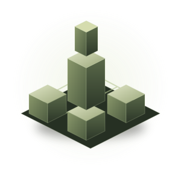
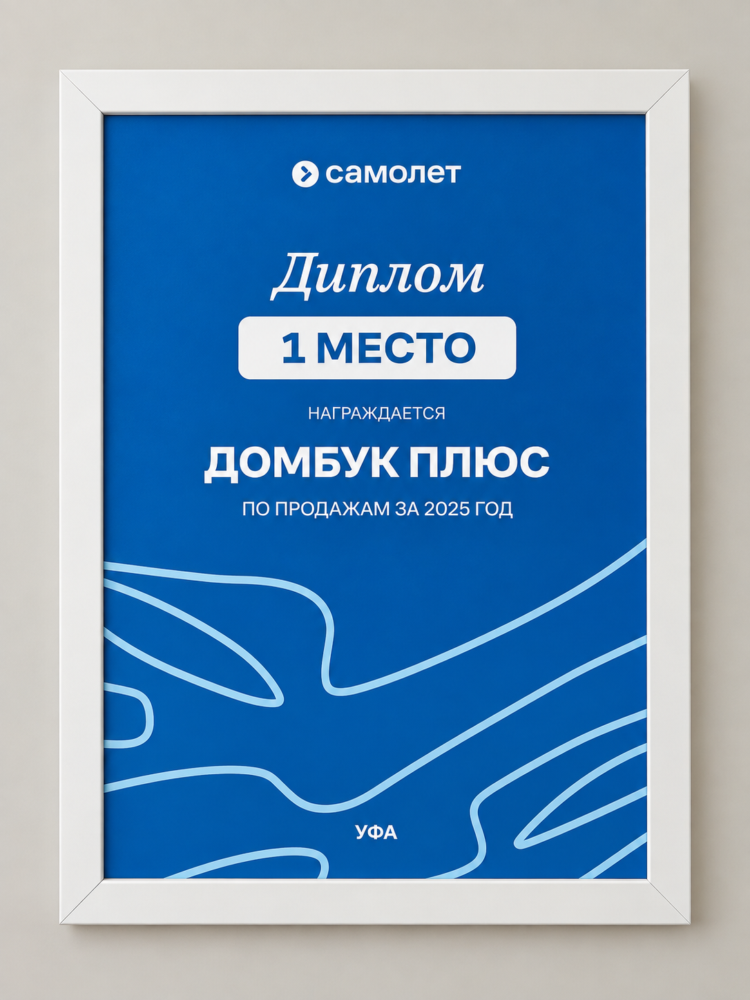
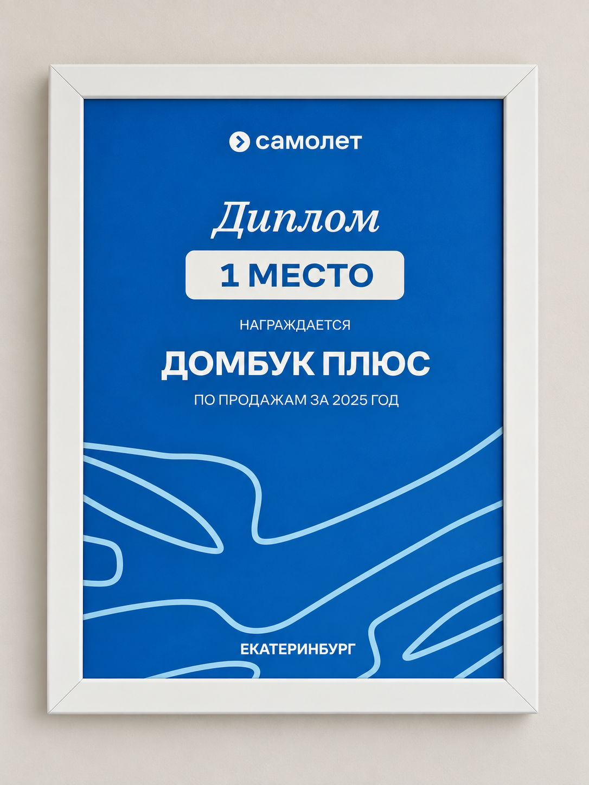

ПОРТФОЛИО
Менеджер по внедрению продуктов и развитию партнёрской сети
Помогаю внедрять продукты в партнёрские сети, развивать активность пользователей и выстраивать процессы между бизнесом, партнёрами и внутренними командами.

Показатели партнёрской платформы и сети, с которыми я работаю.
Вижу процесс целиком.
Довожу до результата.
Работаю на стыке продукта, продаж и партнёрского развития. Более 8 лет в недвижимости: от прямых продаж новостроек до развития партнёрских платформ и внедрения продуктов. Мне особенно близки задачи, где нужно разобраться в сложном процессе, найти реальные проблемы пользователей, объяснить продукт понятным языком и довести внедрение до результата.
Чем я занимаюсь
Продукт → внедрение → активностьРезультаты в цифрах.
Работа за ними.
Опыт, который
работает на результат
Признание результатов

Республика Башкортостан

Свердловская область
Мои инструменты
Московский финансово-промышленный университет «Синергия»
Экономика · Финансы и кредит · 2017
Давайте создадим
результат вместе. ↗
Рассматриваю позиции в направлениях Product Implementation, Partner Development, Customer Success, Account Management и PropTech.